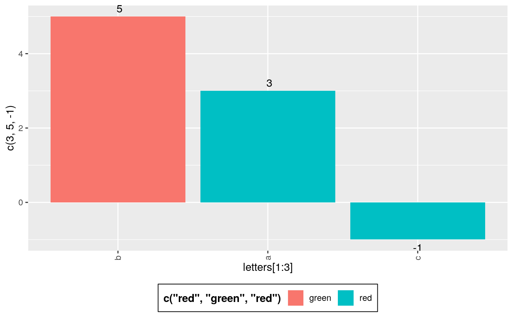
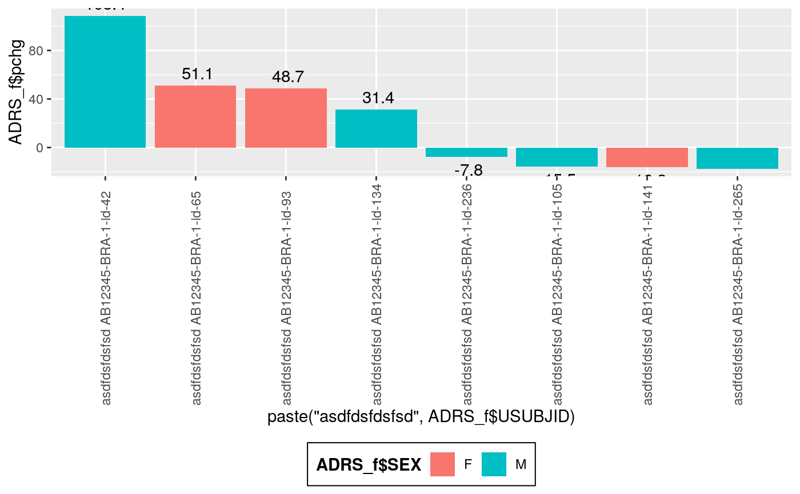
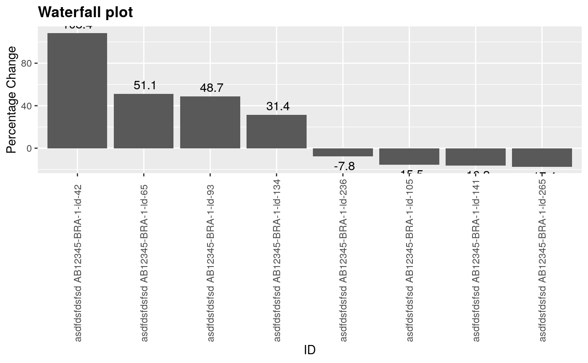

Horizontal Waterfall Plot
g_waterfall.RdThis basic waterfall plot visualizes a quantity height ordered by value with some
markup
g_waterfall( height, id, col = NULL, xlab = NULL, ylab = NULL, col_legend_title = NULL, title = NULL )
Arguments
| height | numeric vector to be plotted as the waterfall bars |
|---|---|
| id | vector of IDs used as the x-axis label for the waterfall bars |
| col | vector of a categorical variable for bar coloring |
| xlab | x label. Default is |
| ylab | y label. Default is |
| col_legend_title | A string to be displayed as legend title. |
| title | A string to be displayed as plot title. |
Examples
library(random.cdisc.data) library(dplyr) ADSL <- cadsl ADSL_f <- ADSL %>% select(USUBJID, STUDYID, ARM, ARMCD, SEX) ADRS <- cadrs ADRS_f <- subset(ADRS, PARAMCD == "OVRINV") %>% mutate(pchg = rnorm(n(), 10, 50)) ADRS_f <- head(ADRS_f, 30) ADRS_f <- ADRS_f[!duplicated(ADRS_f$USUBJID),] head(ADRS_f)#> # A tibble: 6 x 42 #> STUDYID USUBJID SUBJID SITEID AGE SEX RACE COUNTRY INVID ARM ARMCD #> <chr> <chr> <chr> <chr> <int> <fct> <fct> <fct> <chr> <fct> <fct> #> 1 AB12345 AB1234… id-105 BRA-1 38 M BLAC… BRA BRA-1 A: D… ARM A #> 2 AB12345 AB1234… id-134 BRA-1 47 M WHITE BRA BRA-1 A: D… ARM A #> 3 AB12345 AB1234… id-141 BRA-1 35 F WHITE BRA BRA-1 C: C… ARM C #> 4 AB12345 AB1234… id-236 BRA-1 32 M BLAC… BRA BRA-1 B: P… ARM B #> 5 AB12345 AB1234… id-265 BRA-1 25 M WHITE BRA BRA-1 C: C… ARM C #> 6 AB12345 AB1234… id-42 BRA-1 36 M BLAC… BRA BRA-1 A: D… ARM A #> # … with 31 more variables: ACTARM <fct>, ACTARMCD <fct>, STRATA1 <fct>, #> # STRATA2 <fct>, BMRKR1 <dbl>, BMRKR2 <fct>, ITTFL <fct>, SAFFL <fct>, #> # BMEASIFL <fct>, BEP01FL <fct>, RANDDT <date>, TRTSDTM <dttm>, #> # TRTEDTM <dttm>, EOSSTT <fct>, EOSDT <date>, EOSDY <int>, DCSREAS <fct>, #> # DTHDT <date>, LSTALVDT <date>, study_duration_secs <dbl>, ASEQ <int>, #> # RSSEQ <int>, PARAM <fct>, PARAMCD <fct>, AVAL <int>, AVALC <fct>, #> # ADTM <dttm>, ADY <int>, AVISIT <fct>, AVISITN <int>, pchg <dbl>g_waterfall( height = ADRS_f$pchg, id = ADRS_f$USUBJID, col = ADRS_f$AVALC )g_waterfall( height = ADRS_f$pchg, id = ADRS_f$USUBJID, col = ADRS_f$AVALC )g_waterfall( height = ADRS_f$pchg, id = paste("asdfdsfdsfsd",ADRS_f$USUBJID), xlab = "ID", ylab = "Percentage Change", title = "Waterfall plot" )